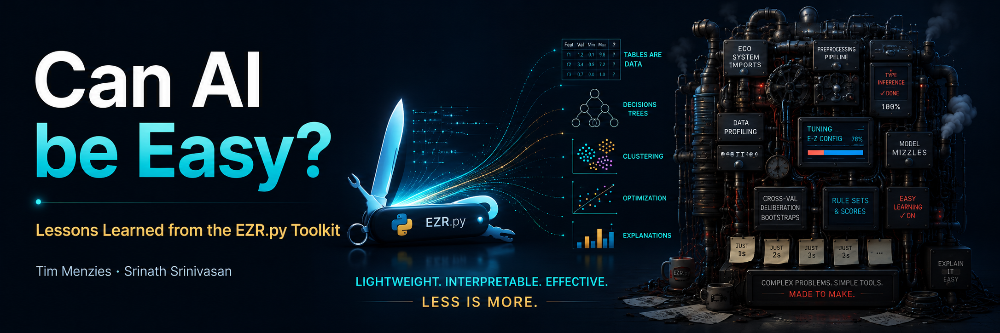

“ Before you buy a Ferrari to drive to the grocery store, try walking. ”
Tim Menzies & Srinath Srinivasan · June 2026
We built EZR.py: a 400-line Python toolkit, stdlib only, under 1MB to install. On 120+ tabular SE optimization tasks it matches or beats SMAC3, SHAP, LIME, FASTREAD — while running 500× faster on under 100 labels.
How? Read the code. Strip the redundancy. Many "different" algorithms — classification, clustering, optimization, text mining — collapse to the same four classes: Num, Sym, Cols, Data. One-line change flips a decision tree from numeric to symbolic prediction. 1983's Simulated Annealing still beats modern Local Search variants. Naive Bayes in 30 lines beats SVM on text.
Six Myths
- Always need heavy infra. No — stdlib.
- Each task needs its own algo. No — same 4 classes.
- Trees differ by prediction type. No — 1-line flip.
- Newer always beats older. No — SA'83 wins.
- Always need massive data. No — 100 labels = 85-95% optimal.
- Text always needs advanced models. No — 30-line NB beats SVM.
By the Numbers
| vs. SMAC3 | 500× faster |
| labels to optimum | < 100 |
| features used | < 10 |
| code size | 400 lines |
| install size | < 1 MB |
| tasks tested | 120+ |
the complex one is technical debt.
Developers still need to read code. At least for tabular optimization.
Read the paper (arXiv:2606.03640)
150 words of css
designed.2.last